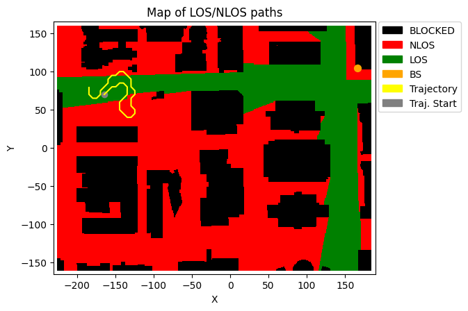
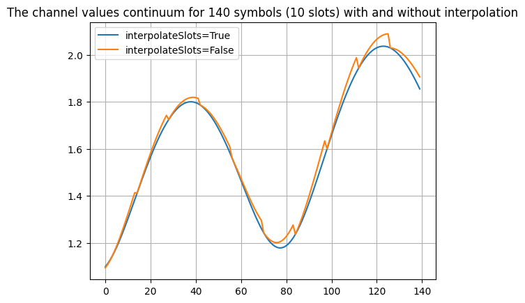

Using the Trajectory-based Channel Model
[1]:
import numpy as np
import os, time
import scipy
import matplotlib.pyplot as plt
from neoradium import DeepMimoData, TrjChannel, Carrier, Grid, Modem, AntennaPanel, random
from neoradium.utils import getNmse
[2]:
# Replace this with the folder on your computer where you store DeepMIMO scenarios
dataFolder = "/data/RayTracing/DeepMIMO/Scenarios/V4/"
DeepMimoData.setScenariosPath(dataFolder)
# Create a DeepMimoData object
deepMimoData = DeepMimoData("asu_campus_3p5")
deepMimoData.print()
DeepMimoData Properties:
Scenario: asu_campus_3p5
Version: 4.0.0a3
UE Grid: rx_grid
Grid Size: 411 x 321
Base Station: BS (at [166. 104. 22.])
Total Grid Points: 131,931
UE Spacing: [1. 1.]
UE bounds (xyMin, xyMax) [-225.55 -160.17], [184.45 159.83]
UE Height: 1.50
Carrier Frequency: 3.5 GHz
Num. paths (Min, Avg, Max): 0, 6.21, 10
Num. total blockage: 46774
LOS percentage: 19.71%
[3]:
random.setSeed(123) # Make results reproducible
# Create the carrier:
carrier = Carrier(startRb=0, numRbs=25, spacing=15) # Carrier with 25 Resource Blocks, 15KHz subcarrier spacing
bwp = carrier.curBwp # The only bandwidth part in the carrier
# Create a random trajectory at waking speed.
trajectory = deepMimoData.getRandomTrajectory(xyBounds=np.array([[-210, 40], [-120, 100]]), # Traj. bounds
segLen=5, # Num grid points on shortest segment
bwp=bwp, # The bandwidth part
trajLen=200, # Number of grid points on trajectory
speedMps=30) # Speed in mps (Walking)
trajectory.print() # Print the trajectory information
deepMimoData.drawMap("LOS-NLOS", trajectory) # Draw the Map with the trajectory
Trajectory Properties:
start (x,y,z): (-164.55, 69.83, 1.50)
No. of points: 7968
curIdx: 0 (0.00%)
curSpeed: [21.28 21.28 0. ]
Total distance: 240.42 meters
Total time: 7.967 seconds
Average Speed: 30.177 m/s
Carrier Frequency: 3.5 GHz
Paths (Min, Avg, Max): 5, 8.79, 10
Totally blocked: 0
LOS percentage: 59.43%
[3]:
(<Figure size 742.518x471.734 with 1 Axes>,
<Axes: title={'center': 'Map of LOS/NLOS paths'}, xlabel='X', ylabel='Y'>)

[4]:
# Create a random grid
txGrid = bwp.createGrid(numPlanes=16) # Create an empty resource grid
stats = txGrid.getStats() # Get statistics about the grid
modem = Modem("16QAM") # Using 16QAM modulation
numRandomBits = stats['UNASSIGNED']*modem.qm # Total number of bits available in the resource grid
bits = random.bits(numRandomBits) # Create random bits
symbols = modem.modulate(bits) # Modulate the bits to get symbols
indexes = txGrid.getReIndexes("UNASSIGNED") # Indexes of the "UNASSIGNED" resources
txGrid[indexes] = symbols # Put symbols in the resource grid
txWaveform = txGrid.ofdmModulate() # OFDM-Modulate the resource grid to get a waveform
print("Shape of Resource Grid:",txGrid.shape)
print("Shape of Waveform: ",txWaveform.shape)
Shape of Resource Grid: (16, 14, 300)
Shape of Waveform: (16, 30720)
[5]:
# Create a MIMO channel model based on our trajectory.
channel = TrjChannel(bwp, trajectory,
txAntenna = AntennaPanel([2,4], polarization="x"), # 8 TX antenna
txOrientation = [180,0,0], # Facing left
rxAntenna = AntennaPanel([1,2], polarization="x"), # 2 RX antenna
interpolateSlots = True,
seed=123)
print(channel)
TrjChannel Properties:
carrierFreq: 3.5 GHz
normalizeGains: True
normalizeOutput: True
normalizeDelays: True
interpolateSlots: True
xPolPower: 10.00 (dB)
filterLen: 16 samples
delayQuantSize: 64
stopBandAtten: 80 dB
dopplerShift: 353.7814505317208 Hz
coherenceTime: 0.0011960553246215984 sec
TX Antenna:
Total Elements: 16
spacing: 0.5𝜆, 0.5𝜆
shape: 2 rows x 4 columns
polarization: x
Orientation (𝛼,𝛃,𝛄): 180° 0° 0°
RX Antenna:
Total Elements: 4
spacing: 0.5𝜆, 0.5𝜆
shape: 1 rows x 2 columns
polarization: x
Trajectory:
start (x,y,z): (-164.55, 69.83, 1.50)
No. of points: 7968
curIdx: 0 (0.00%)
curSpeed: [21.28 21.28 0. ]
Total distance: 240.42 meters
Total time: 7.967 seconds
Average Speed: 30.177 m/s
Carrier Frequency: 3.5 GHz
Paths (Min, Avg, Max): 5, 8.79, 10
Totally blocked: 0
LOS percentage: 59.43%
[6]:
# Apply the channel in Frequency Domain:
t0 =time.time()
channelMatrix = channel.getChannelMatrix()
rxGridF = txGrid.applyChannel(channelMatrix)
t1 =time.time()
print("Time to apply channel in Freq. Domain:", t1-t0)
Time to apply channel in Freq. Domain: 0.012088775634765625
[7]:
# Applying the channel in time domain and demodulate to get a received resource grid (rxGrid)
t0 =time.time()
maxDelay = channel.getMaxDelay() # Calculate the channel's max delay
paddedTxWaveform = txWaveform.pad(maxDelay) # Pad the waveform with zeros
rxWaveform = channel.applyToSignal(paddedTxWaveform) # Apply the channel to the waveform
offset = channel.getTimingOffset() # Get the timing offset for synchronization
syncedWaveform = rxWaveform.sync(offset) # Synchronization
rxGridT = Grid.ofdmDemodulate(bwp, syncedWaveform) # OFDM-demodulation
t1 =time.time()
print("Time to apply channel in Time Domain:", t1-t0)
print("NMSE between the rxGrid in Time and Freq. domains: ",getNmse(rxGridT.grid,rxGridF.grid))
Time to apply channel in Time Domain: 0.16606688499450684
NMSE between the rxGrid in Time and Freq. domains: 1.9054214875297066e-18
[8]:
# The following example shows the difference between interpolating the multipath information
# for different symbols in a slot vs using the same multipath information for all symbols in
# a slot.
from matplotlib import pyplot as plt
chanMats = [] # list of consecutive channel matrixes
channel.interpolateSlots = True # First: Using interpolation
channel.restart()
t0 = time.monotonic()
for i in range(10): # 10 channel matrices
chanMats += [ channel.getChannelMatrix() ]
channel.goNext()
chanMats = np.stack(chanMats) # Shape: 10 x 14 x 300 x 4 x 16
# Sequence of channel values for first subcarrier, between first transmitter and
# first receiver antenna (A sequence 140 complex values)
chanValuesInt = chanMats[:,:,0,0,0].flatten()
chanMats = [] # Reset the list
channel.interpolateSlots = False # Now not using interpolation
channel.restart()
t0 = time.monotonic()
for i in range(10): # 10 channel matrices
chanMats += [ channel.getChannelMatrix() ]
channel.goNext()
chanMats = np.stack(chanMats) # Shape: 10 x 14 x 300 x 4 x 16
chanValuesNoInt = chanMats[:,:,0,0,0].flatten()
plt.plot(np.abs(chanValuesInt), label="interpolateSlots=True")
plt.plot(np.abs(chanValuesNoInt), label="interpolateSlots=False")
plt.grid()
plt.legend()
plt.title("The channel values continuum for 140 symbols (10 slots) with and without interpolation")
[8]:
Text(0.5, 1.0, 'The channel values continuum for 140 symbols (10 slots) with and without interpolation')

[ ]:
[ ]:
[ ]: